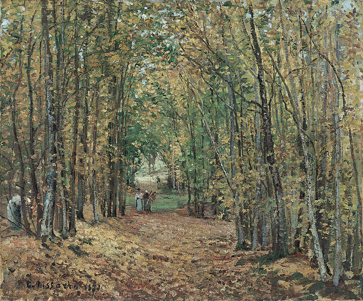
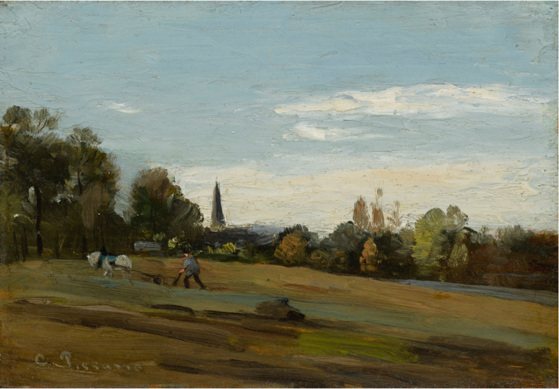
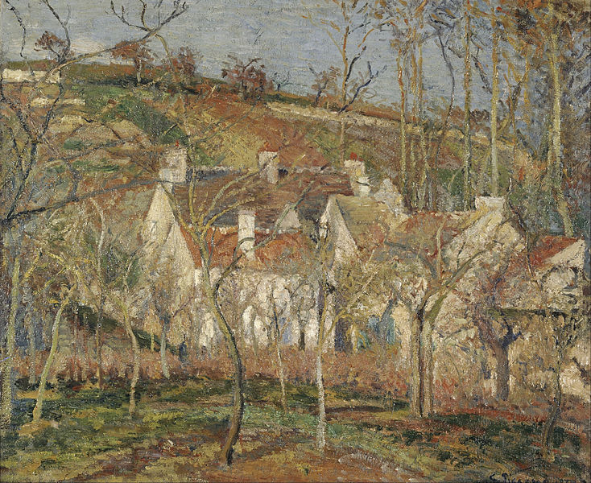

Allée dans le parc de Marly
1871

Le labourage, Bérelles
1860

Camille Pissarro, mit französischer und dänischer Staatsangehörigkeit, malte vor allem Landschaften zur Epoche des Impressionismus.
Zurück